8. Clip View
The Clip View is where you can set and adjust clip properties, as well as view and edit clip content such as audio waveforms, MIDI notes, envelopes, or MPE data.

To open the Clip View, double-click on a clip in the Session or Arrangement View, click on the Clip View Selector, or use the Clip View Toggle next to the selector.
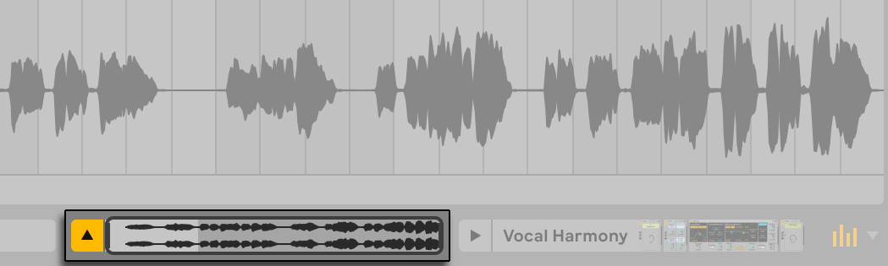
Note that when the Clip View Toggle is used while the Device View is open, the Clip View will be stacked on top of the Device View.
It is also possible to toggle the Clip View with the keyboard shortcut CtrlAlt3 (Win) / CmdOption3 (Mac).
You can resize the Clip View by dragging its top border. If you drag the border to the very bottom of Live’s window, the view will be automatically closed; it can be reopened using any of the methods described above.
When opening the Clip View while using Live in a second window, the view will open in the window that is currently focused. To move the Clip View to the other window, press the F12 key. If the Use Tab Key to Navigate option is switched off in Live’s Settings, you can also use the ShiftTab shortcut to move the view between the windows.
Note that the Clip View always shows the currently selected clip. This means that when working in two windows, you can select a clip in the window where the Clip View is not open, and the clip will be displayed in the Clip View in the second window. This behavior allows you to, for example, dedicate one window to detailed clip editing while using the other window for your work in the Session or Arrangement.
In the Session View, clicking on a Track Status Display opens the Clip View for editing the clip that is currently playing in the track.

8.1 Clip View Layout
The Clip View consists of a title bar and two sections: clip panels on the left and an editor on the right. Depending on whether you are working with an audio clip or a MIDI clip, different options are available in the panels, and a dedicated editor is displayed: the Sample Editor for audio clips and the MIDI Note Editor for MIDI clips.


8.1.1 Clip Title Bar
The clip title bar contains the Clip Activator toggle and, for audio clips, the Save Default Clip button. It also displays the currently selected clip’s name and color.
8.1.1.1 Clip Activator Toggle
You can use the Clip Activator toggle to deactivate a clip so that it does not play when launched in the Session View or during Arrangement playback. A clip can also be deactivated directly from the Session or Arrangement through the clip’s context menu, or by pressing the 0 key.
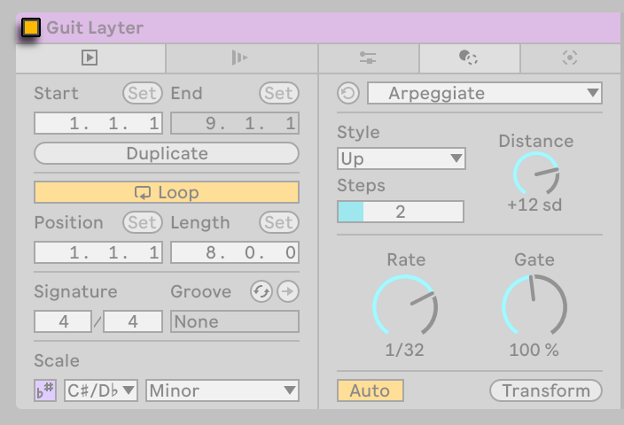
When multiple clips are selected, toggling the Clip Activator off deactivates all of the clips at the same time.
8.1.1.2 Clip Name
By default, a clip’s name matches the name of the file it references but can be changed. To rename a clip, choose the Rename option from the title bar context menu.
It is also possible to rename a clip by selecting it in the Session grid or Arrangement View and using the Rename command in the Edit menu or the clip’s context menu. The Edit menu and the clip’s context menu also give you the option to create your own descriptive text for the clip via the Edit Info Text command.
Note that renaming an audio clip does not rename the referenced sample file. To rename a file, select it in Live’s browser, and then choose the Edit menu’s Rename command.
When multiple clips are selected, the title bar displays the number of selected clips. You can still rename all of the selected clips at the same time, but the new name will not be displayed in the Clip View’s title bar.
8.1.1.3 Clip Color
Newly created clips use the same color as the track on which they’re created, but you can also manually choose a clip color from the color palette in the Clip View’s title bar context menu or the clip’s context menu.
If you change the colors of a track’s clips, you can quickly reapply the track’s color to each of the clips by using the Assign Track Color to Clips command in the track header’s context menu. You can also apply a Group Track’s color to all of its contained tracks and clips, by using the Assign Track Color to Grouped Tracks and Clips command in the respective Group Track header’s context menu.
Note that when using the Assign Track Color to Clips or Assign Track Color to Grouped Tracks and Clips command in the Session View, the color change will only affect the Session clips. Likewise, using either command in the Arrangement View will only change the color of the Arrangement clips.
When multiple clips are selected, the title bar uses a striped pattern in Live’s UI colors. You can still select a new color for all of the selected clips, but the change will not be reflected in the title bar unless a single clip is selected.
8.1.1.4 Saving Default Audio Clip Settings with the Sample
In audio clips, the clip title bar also includes the Save Default Clip button, which you can use to save the current clip’s settings with the loaded sample. When multiple clips are selected, using the button will save the clip settings for all samples simultaneously.
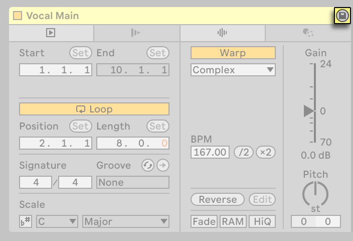
Once the clip’s settings are saved, Live will restore them whenever you drop the sample into a Set. This is especially useful with regard to Warp Markers that have to be set correctly for Live to play long files in sync. Note that using the Save Default Clip button does not work retroactively: the settings will be used as the default only for new clips that use the same sample. The settings will not be applied to previously created clips that use this sample.
The clip data becomes part of the analysis file that accompanies the sample.
Note that storing default clip settings with the sample is different from saving the clip as a Live Clip, which also saves devices and device settings.
8.1.2 Clip Panels
The left side of the Clip View contains clip panels.
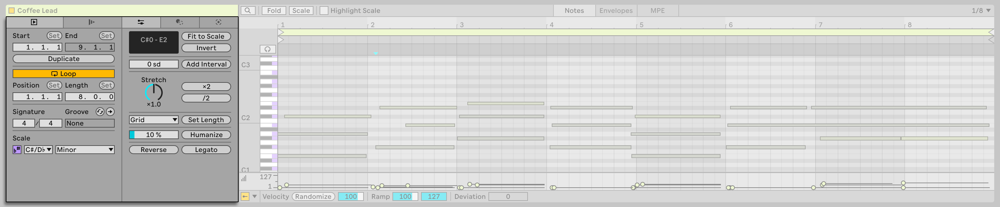
For both audio and MIDI clips, the Main and Extended Clip Properties panels contain basic clip settings such as clip or loop start and end points, time signature, groove, or scale settings, as well as clip launch properties (when viewing Session View clips).
Given that MIDI clips and audio clips in Live have different sets of properties, they also have some unique controls relevant to their type of content. These controls are located in additional panels: (Audio Utilities and Audio Transformation Tools) panels for audio clips, and (Pitch and Time Utilities, as well as MIDI Transformation and Generative Tools) for MIDI clips.
Clip View panels can be arranged horizontally or vertically. You can also choose to switch between the horizontal and vertical views automatically depending on the height of the Clip View area.
To arrange the Clip View vertically, drag the right edge of the Clip View panel (next to the Sample Editor/MIDI Note Editor) to the left; drag it to the right to switch back to horizontal arrangement. Alternatively, you can use the Arrange Clip View Panels Vertically/Horizontally options in the View menu to select the desired Clip View arrangement. To change views automatically, you can select the Arrange Clip View Panels Automatically option from the View menu or from the clip title bar context menu. Live will remember the Clip View arrangement when you open it again in the future.
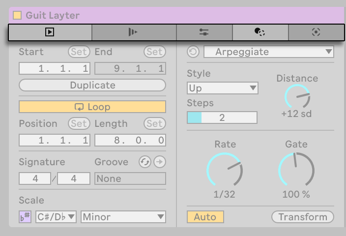
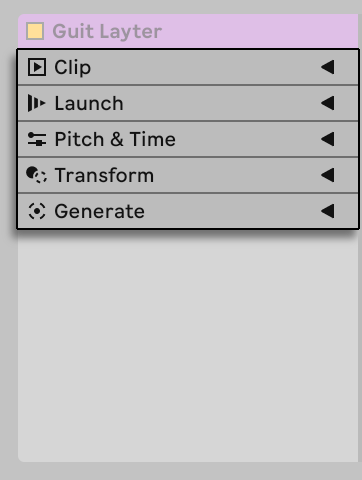
You can minimize the Clip View panels by double-clicking the clip title bar or selecting the Fold option from the title bar context menu.
8.1.3 Editor View Modes
The right side of the Clip View contains an editor. There are different editor view modes available, depending on whether an audio clip or a MIDI clip is loaded. You can toggle between the modes by clicking on their dedicated tabs, selecting the relevant mode from the View menu, or by using keyboard shortcuts. In audio clips, you can toggle between the Sample Editor and the Envelope Editor, while in MIDI clips you can toggle between the MIDI Note Editor, the Envelope Editor, and the MPE Editor.
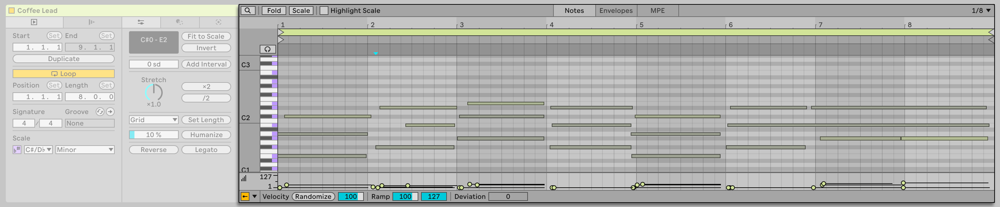
The Sample Editor allows you to view the sample’s waveform and control Live’s sample-warping capabilities.
The Envelope Editor is where you can manage the clip’s envelopes, which can be used to automate or modulate the effects, mixer, and clip or MIDI controls.
The MIDI Note Editor allows editing and creating MIDI notes and velocities.
You can use the MPE Editor to edit different dimensions of MIDI Polyphonic Expression (MPE) for each note in a clip.
You can use the AltTab (Win) / OptionTab (Mac) shortcut to quickly switch between the editor view modes.
8.2 Main Clip Properties Panel
Clip View’s leftmost panel includes clip region, loop, time signature, groove, and scale settings.
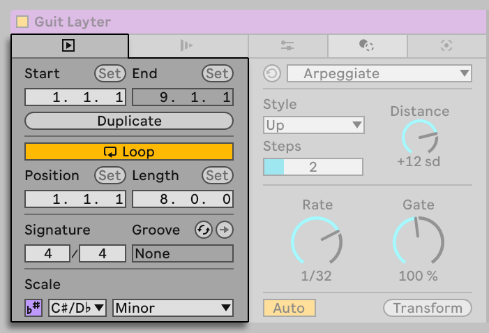
8.2.1 Clip and Loop Region Settings
The section of the clip that plays when a clip is launched is set with the clip’s region and loop controls. An unlooped clip will play from its start point to its end point or until it is stopped.
You can adjust the clip start and end position using the respective value fields. You can also use the Set Start and Set End buttons to set the start and end positions during playback; using a Set button will set the field to the current playhead position. Setting clip start and end positions in this way is quantized according to global quantization.
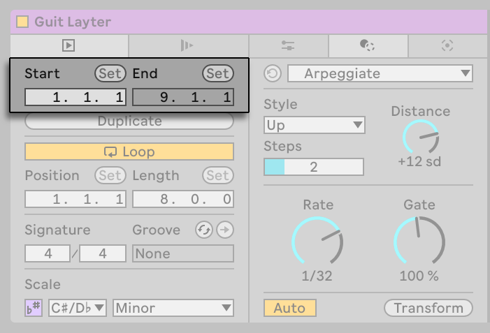
Note that for warped audio clips, the start and end position fields display values as bars-beats-sixteenths; for unwarped audio clips, the values are displayed in minutes-seconds-milliseconds.
To have the clip play as a loop, toggle on the Clip Loop toggle. You can set the loop region by entering the desired values into the Loop Position and Length fields. Note that by default, the Loop Length field is set to the clip’s total length.
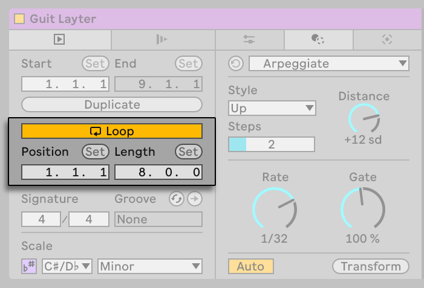
Note that for audio clips, the Warp toggle must be activated in the Audio Utilities panel before the Clip Loop toggle can be enabled, as unwarped audio clips cannot be looped.
The Loop Position and Length fields are equipped with the Set buttons, which can be used to create loops spontaneously during playback.
Playing the clip and then clicking the Set Loop Position button moves the beginning of the loop to the current playback position (rounded to the global quantization setting) and engages the loop. Then, clicking the Set Loop Length button moves the end of the loop to the current playback position. This lets you capture the music in a loop on the fly.
While the loop is still off, you can click the Set Loop Length button to set the loop to end at the current playback position without changing its preset length. This simultaneously activates looping.
The Set buttons, the Clip Loop toggle, the loop region, and the start/end positions can all be mapped to MIDI controls. You could, for example, use a rotary encoder to move the loop through a sample in increments the size of the chosen quantization interval.
8.2.2 Clip Time Signature
You can specify the time signature of a MIDI or audio clip using the Clip Time Signature fields. Note that this setting is relevant only for display purposes; it does not affect playback.
Clip time signature is completely separate from the project’s time signature, and can be set independently for each clip. This makes it easy to see which clips can be used to create complex polymetric textures when simultaneously triggering clips with different meters and/or loop lengths.
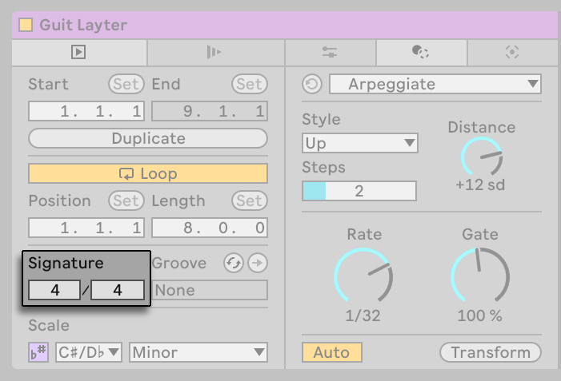
8.2.3 Clip Groove
The Clip Groove chooser lets you select the groove used for the clip from the grooves available in the Groove Pool.
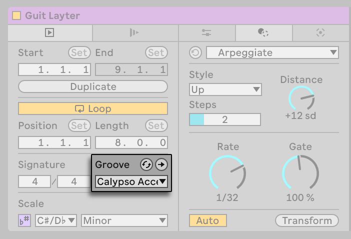
You can use the Hot-Swap Groove button in the clip to swap the currently loaded groove to a new groove selected from Live’s browser. Double-click on a selected groove or hit the Enter key to load the groove on the clip. Note that this action also replaces the previously loaded groove in the Groove Pool as well as the clip.
The Commit button under the Clip Groove chooser “writes“ the current groove settings to the clip and disables the assigned groove. For grooves that use positive velocity values, committing a groove to an audio clip will create a volume clip envelope in order to convert the groove’s velocity information into audio volume changes. Note that this will overwrite any volume clip envelope that was already in the clip.
8.2.4 Clip Scale
The Scale button enables or disables Scale Mode for a clip. You can set a clip’s scale using the Root Note and Scale Name choosers.
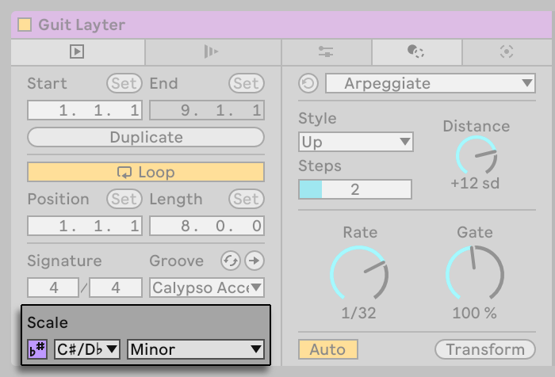
Setting a scale in an audio clip does not affect playback (much like the clip time signature setting has no effect on playback); instead, scale settings are forwarded to scale aware devices on the device chain.
When Scale Mode is enabled for a MIDI clip, the keys associated with the notes belonging to the set scale are highlighted in the MIDI Note Editor piano ruler. This can be useful for writing melodies within a certain scale. Scale controls for MIDI clips are described in further detail in the Folding and Scales section of the Editing MIDI chapter.
8.3 Extended Clip Properties
The Extended Clip Properties panel contains the clip launch controls and MIDI bank/program controls.
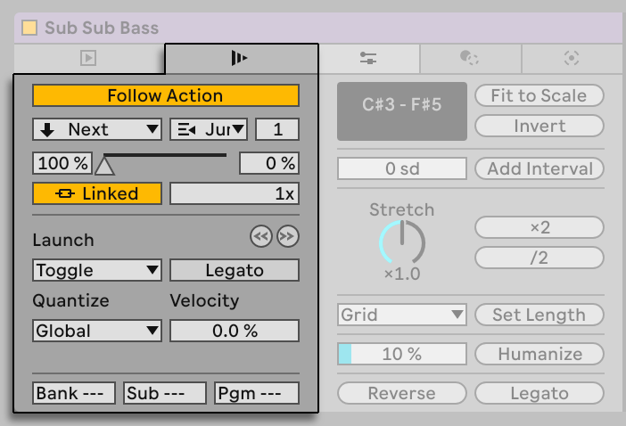
Note that since Arrangement clips are not launched, but instead played according to their position on the timeline, this panel shows the clip launch controls only when a Session View clip is selected. This means that the panel does not appear in the Clip View at all when an Arrangement audio clip is selected, and contains only the MIDI bank/program controls when an Arrangement MIDI clip is selected.
8.3.1 Follow Action and Launch Controls
Tracks can have an unlimited number of groups, separated by empty slots. The Follow Action controls can be used to define how successive clips in a group are triggered.
The launch controls allow you to specify how clips react to mouse, computer keyboard, or MIDI note interactions. There are also options for adjusting the clip launch timing, scrubbing clips, and controlling the effect of MIDI note velocity on the clip’s volume.
Both the Follow Action and launch controls are described in detail in the Launching Clips chapter.
8.3.2 MIDI Clip Bank and Program Change Controls
In MIDI clips, the Extended Clip Properties panel includes settings that allow Live to send MIDI bank/program change messages to external devices and plug-ins that support MIDI program change messages.
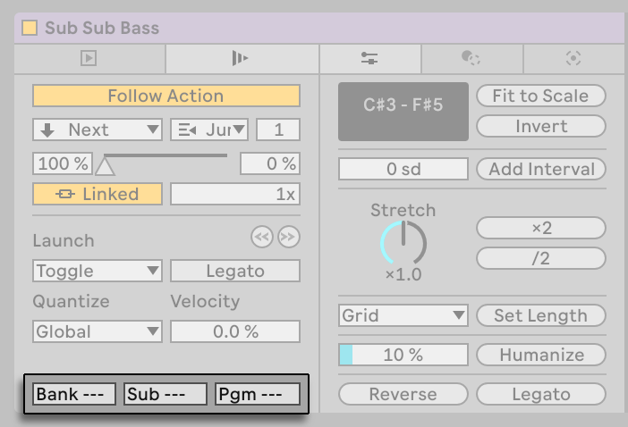
You can use these controls to send a bank/program change message when launching a clip. If you are using Live to send MIDI to your synth, this means that each MIDI clip in your Live Set can play a different sound on your synth. Live offers messages for 128 banks with 128 sub-banks, each of which has 128 programs. Please see the documentation that came with your synthesizer to determine how many of these messages it can use.
If you do not want your clip to send program or bank change messages, simply leave the bank/program choosers set to “—.“
8.4 Audio Utilities Panel
The Audio Utilities panel for audio clips contains warping tools, options for reversing and editing the sample, controls for adjusting the sample’s tempo, gain, or transposition, as well as toggles that allow you to create crossfades, load the sample from memory, or use high-quality interpolation when playing the sample.
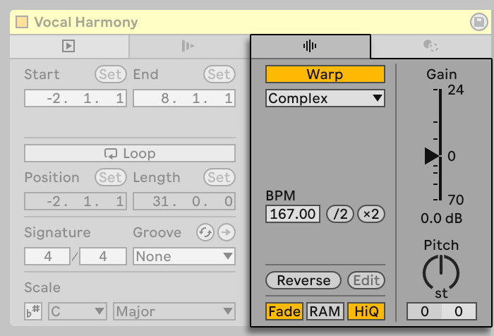
8.4.1 Warp Controls
Live offers a number of controls to adjust the time-warping engine for optimal stretching quality.
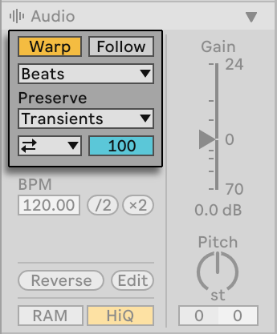
When the Warp toggle is off, Live plays the sample at its original tempo, irrespective of the current Live Set tempo. This is useful for samples that have no inherent rhythmic structure: percussion hits, atmospheres, sound effects, spoken word and the like. Turn the Warp toggle on to play rhythmically structured samples (such as sample loops, music recordings, complete music pieces, etc.) in sync with the current song tempo. A warped sample’s speed follows the tempo as you change the Control Bar’s Tempo control.

For accurate warping, Live needs to know the sample’s metrical structure. For properly prepared loops, tempo and duration are calculated automatically; most of the time this is accurate enough that the sample is immediately ready for use in Live. For other samples, you may have to provide some hints.
8.4.2 Reversing Samples
Clicking the Reverse button creates a new sample by reversing the sample referenced by the current clip.
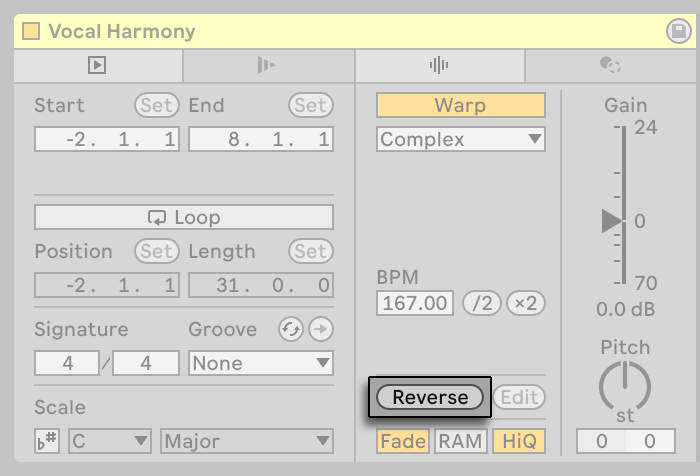
When you use this option, Live reapplies the old clip’s settings (according to the rules described below), and replaces the original sample with a new, reversed sample in the Clip View. The new sample can be found, after saving the Live Set, in the Set’s Project folder, under Samples/Processed/Reverse. Until the Set is saved, new samples remain at the location specified as the Temporary Folder in Live’s Settings.
There are a few rules for the reversing process. Firstly, any Warp Markers will remain fixed to their positions in the sample. This means that a Warp Marker on the downbeat of the second bar of a clip will end up on the downbeat of the second-to-last bar after reversal. Clip loop/region settings are similarly flipped. Secondly, clip envelopes remain fixed to their position in time. Therefore, a mixer volume envelope that lowers the volume of the first half of a clip will continue to do exactly that after reversal.
The reversal process is quite fast (about as fast as copying), but for very long samples it might take a little time. When this is the case, a progress bar will be displayed in Live’s Status Bar, and further actions in the program will be temporarily locked (though currently playing clips will continue to play). You can play the reversed clip and perform other actions in the program as soon as Live begins to generate a new waveform into the Sample Editor. Once a sample is reversed, Live stores information about the original and reversed version until the program is closed. This means that if you were to revert the sample back to the original version and then reverse it again, the reversal process will be instantaneous.
In the Session View, it is not possible to reverse multiple clips at the same time. In the Arrangement View, it is possible to reverse a selection of material, even if it contains multiple clips. To do this, select the range of time you want to reverse, and choose the Reverse Clip(s) command from the clip’s context menu, or press the R shortcut key.
It is not recommended that you reverse clips in a live performance situation, as a slight audio glitch can sometimes occur while Live reapplies the warp and loop settings.
8.4.3 Destructive Sample Editing
Clicking the Edit button opens the sample in an external sample editing application, which you can specify in the File & Folder Settings.
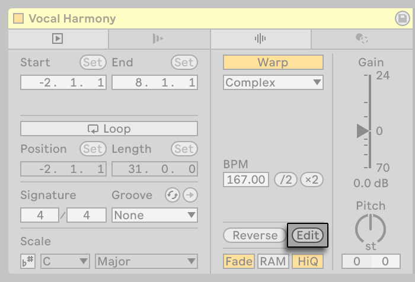
To process a sample in an external program, you have to stop Live’s playback. When you return to Live, the edited version of the sample will be played back. The current set of Warp Markers is retained only if the sample length remains the same as it did prior to editing.
Note that changes made to one sample may affect other clips that play the same sample.
8.4.4 Clip Start and End Fades
The Clip Fade toggle, when enabled, applies a short fade to the clip start and end to avoid clicks at the clip edges. The length of the fade is signal-dependent and ranges from 0-4 milliseconds.
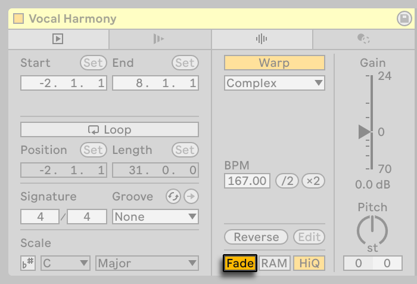
Note that the toggle is only available for clips in Session View. In Arrangement View, clip fades are adjusted via envelopes.
The Clip Fade toggle is on by default for all new clips when the Create Fades on Clip Edges option is enabled in the Record, Warp & Launch Settings.

8.4.5 Clip RAM Mode
When you activate the RAM Mode toggle, Live loads the audio referenced by the clip into the computer’s memory rather than reading it from disk in real time.
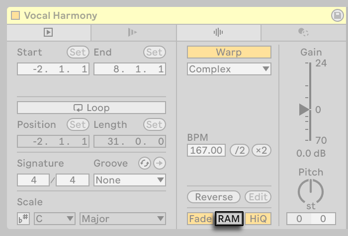
RAM Mode can help with these problems:
- Your computer’s hard disk is too slow to deliver audio for as many tracks as desired in real time. For more information on disk-related problems, please refer to Managing the Disk Load.
- You are experiencing audio dropouts when playing clips in Legato Mode.
Your computer is using the hard disk for swapping out RAM contents that have not been used in a while. The more clips you are running in RAM Mode, the higher the likelihood for them to be swapped out. Live can handle disk overloads more gracefully than swapped-out audio arriving late: disk overloads result in unwanted mutes, whereas RAM overload results in both mutes and rhythmical “hiccups.“
8.4.6 High Quality Interpolation
If the High Quality toggle is on, Live uses an advanced sample-rate conversion algorithm that provides better sound quality at the expense of a higher CPU load.
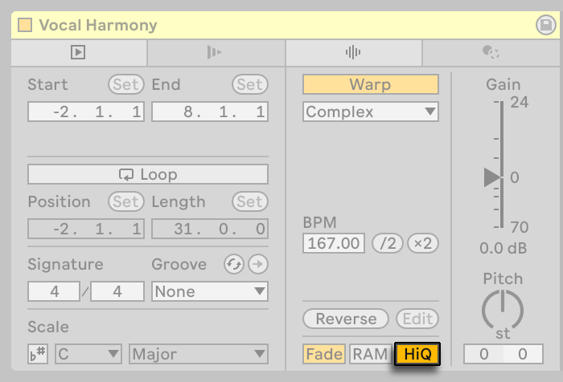
Samples processed with the Hi-Q algorithm generate less distortion, particularly at high frequencies, when transposing a sample and/or matching an imported sample’s sampling rate to the system’s sampling rate. With this mode enabled, samples can be transposed roughly 19 semitones in either direction before aliasing is likely to be audible.
8.4.7 Clip Gain and Pitch
On the right of the Audio Utilities panel, you will find the clip gain and pitch controls.
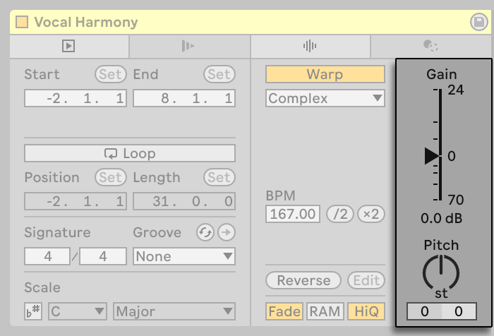
The Gain slider, calibrated in dB, changes the clip gain.
When multiple audio clips with different Gain values are selected, the value range is shown with split triangle handles on the Gain slider.
The Pitch control shifts the clip’s pitch in semitones. This amount can also be adjusted using the value field on the left underneath the knob. To the right of the semitone value field is another value field for transposing in cents (100 cents = one semitone).
8.5 Pitch and Time Utilities Panel
The Pitch and Time Utilities panel contains tools that let you quickly manipulate MIDI notes in a clip. The pitch and time tools affect the selected notes or time range. If nothing is selected, any changes applied with button controls will affect the whole clip.
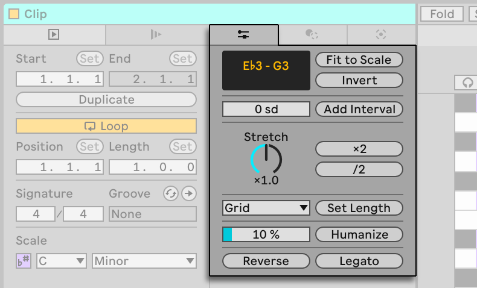
For a more detailed discussion of MIDI editing, see the Editing MIDI chapter.
8.5.1 Pitch Tools
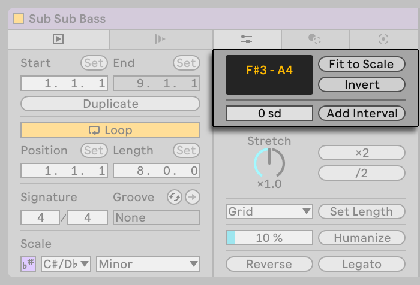
The Transpose slider transposes the selection. Type a number to transpose by semitones or scale degrees (if a clip scale is active).
The Fit to Scale button adjusts the pitches of the selection so that they match the clip’s scale. If a scale is not active for the clip, this toggle will be inactive.
Clicking the Invert button flips the selection “upside-down” so that the highest note is swapped with the lowest note.
The Interval Size slider sets the number of semitones or scale degrees (if a clip scale is active) by which the pitches of new notes will be shifted in relation to the pitches of the original note selection. Use the Add Interval button to add new notes at an interval specified by the slider.
8.5.2 Time Tools
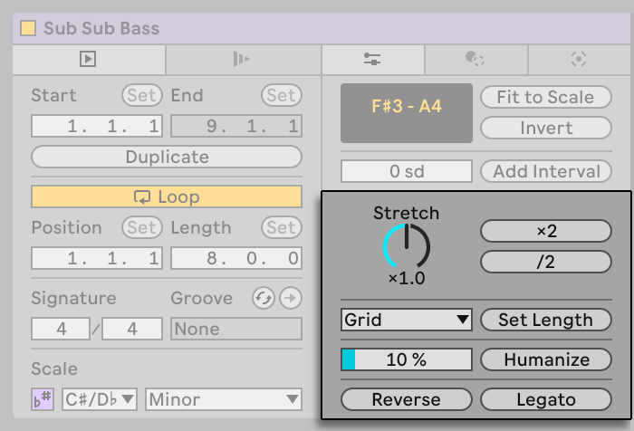
The Stretch knob compresses or stretches the duration of the selected notes, while the ×2 and /2 buttons stretch or compress the note duration, time selection, or loop region by a factor of 2.
The Duration chooser allows you to set a note length value to be applied to the note selection. Use the Set Length button to apply the note length option specified in the chooser.
The Humanize Amount slider sets the amount of random variation to apply to note start times, up to half a grid division. Use the Humanize button to apply the random variation to the note selection.
Clicking the Reverse button reverses the selection so that the order of the note pattern is flipped.
Use the Legato button to lengthen or shorten each selected note so that it is just long enough to reach the beginning of the next note.
8.6 Transform and Generate Panels
The Transform and Generate panels contain different utilities that can be used to manipulate clip content.
For audio clips, the Transform panel contains the Quantize tool. When working with a warped clip, you can use the tool to set either the current grid size or a specific meter value for sample quantization. The Amount control allows setting the percentage of the set quantization value by which Warp Markers will be moved.

Note that there is no Generate panel for audio clips.
When working with MIDI Clips, Transform and Generate panels contain various MIDI Tools, a set of utilities that can be used to enhance your musical composition process, allowing you to shape MIDI material through transforming or generating notes or MPE data.
Transformation tools affect either selected notes, notes in a time selection, or all notes in the clip. Once a transformation tool is applied, the original notes are replaced by transformed notes. When the Scale Mode is on, the pitch controls in the tool use scale degrees instead of semitones.
Generative tools make it possible to quickly add new material by automatically creating patterns of notes in MIDI clips. Notes will be generated within the time selection range or within the clip loop range. When the Scale Mode is on, generated note pitches are constrained within the selected scale.
To learn more about the individual transformation and generative tools available in Live, please refer to the MIDI Tools chapter.
8.7 Zooming and Scrolling in the Clip View’s Editor
Zooming and scrolling in either the Sample Editor or MIDI Note Editor work much like they do in the Arrangement View.
Click and drag vertically in the time ruler to smoothly change the zoom level, and horizontally to scroll the display. You can also scroll with the mousewheel or trackpad.
To zoom in on the current time selection completely, press Z or use the View menu’s Zoom to Clip Selection command. You can revert back to the previous zoom state by pressing the X key. Note that when zooming in multiple times using the Z key, the X key can be pressed multiple times to go back one step each time the key is pressed.
The Clip View Selector provides additional zooming and scrolling functionality. It always shows the complete clip, from start to end. The black rectangular outline represents the part of the clip that is currently displayed. You can click within the outline and drag horizontally or vertically to scroll or zoom.
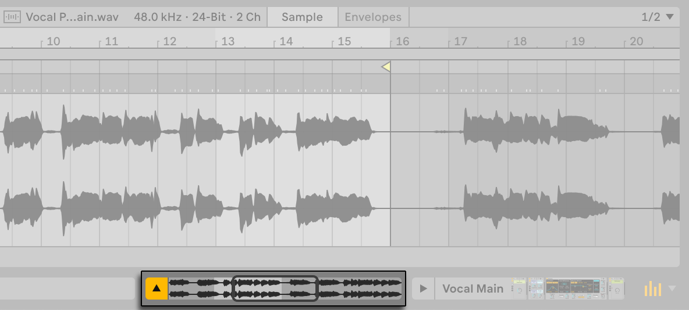
To have the editor follow the play position and scroll automatically, turn on the Follow toggle, or use the Follow command from the Options menu. Follow will pause if you make an edit in the Sample Editor/MIDI Note Editor. Follow will start again once you stop or restart playback, or click in the Arrangement or clip scrub area.

8.8 Playing and Scrubbing Clips
The section of the clip that plays when a clip is launched is set with the clip’s region and loop controls. An unlooped clip will play from its start marker to its end marker or until it is stopped.
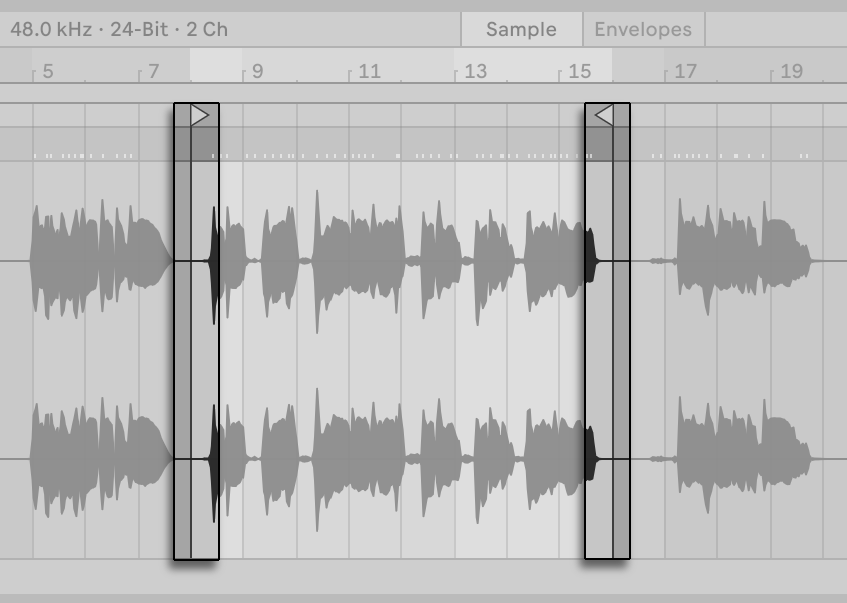
The markers can be clicked and dragged to new positions in the Sample Editor/MIDI Note Editor, or they can be moved with the left and right arrow keys. To move the entire clip region (i.e., both the start and end markers), select either marker, hold down Alt (Win) / Option (Mac), and use the arrow keys.
When Permanent Scrub Areas is enabled in Live’s Display & Input Settings, clicking in the lower half of the waveform or in the scrub area below the time ruler will make clip playback jump to that point.
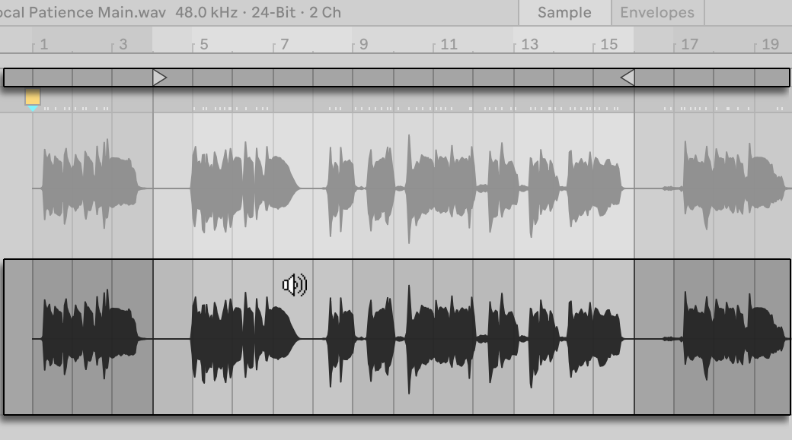
The size of this jump is quantized by the global quantization setting, which can be quickly changed using the Ctrl6, 7, 8, 9, and 0 (Win) / Cmd6, 7, 8, 9, and 0 (Mac) shortcuts. When the left mouse button is held down over the scrub area, a portion of the clip the size of the chosen quantization setting will be repeatedly played. With small quantization settings, or a setting of “None,“ this allows you to scrub through the music. Activating the Options menu’s Chase MIDI Notes command allows MIDI notes to play back even if playback begins after the MIDI note’s start time.
When the Permanent Scrub Areas preference is off, you can still scrub by Shift-clicking anywhere in the scrub area or in the beat-time ruler.
8.9 Looping Clips
To have the clip play as a (potentially infinite) loop, turn on the the Clip Loop toggle. For audio clips, the Warp switch must be activated before the Loop switch is accessible, as unwarped audio clips cannot be looped.
When the Clip Loop toggle is on, the clip will play as a loop defined by the loop region settings.
In the Clip View editor, the loop region is represented by the loop brace. You can click and drag on the loop start and end markers to change the position and length of the loop brace.
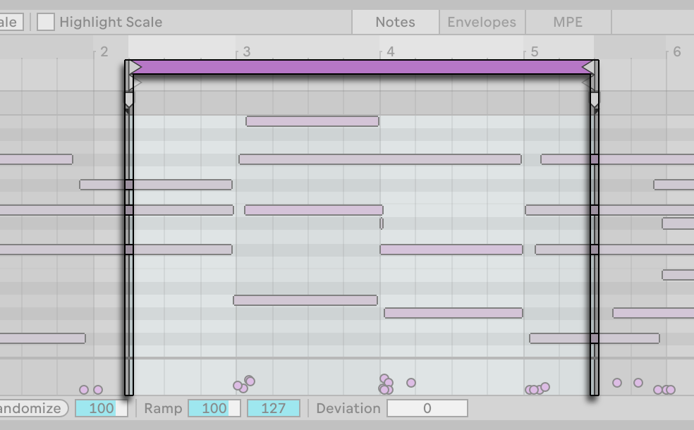
To move the loop brace to a different position, click and drag it with the mouse. You can also change the loop brace position with the following keyboard shortcuts:
- The left and right arrow keys nudge the loop brace to the left/right by the current grid setting.
- The up and down arrow keys shift the loop brace left/right in steps the size of its length.
- Ctrl (Win) / Cmd (Mac) with the left or right arrow key shortens or lengthens the loop brace by the current grid setting.
- Ctrl (Win) / Cmd (Mac) with the up or down arrow key doubles or halves the loop length.
You can quickly duplicate the loop’s length and its contents via the Edit menu’s Duplicate Loop command. In MIDI clips, any notes to the right of the loop will be moved, so that they maintain their position relative to the end of the loop.
Regardless of the position of the loop brace, clip will begin playing at the start marker position, which means you can set up the clip to run into a loop.
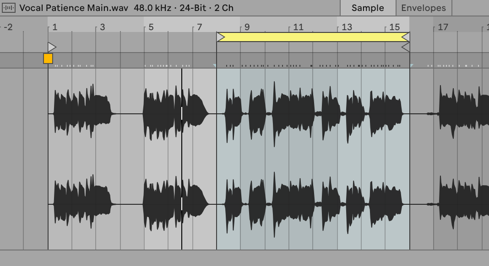
8.10 Clip View Sample Details
When working with audio clips, the Sample Editor header displays the name of the loaded sample, its sample rate, bit depth, and channel count.
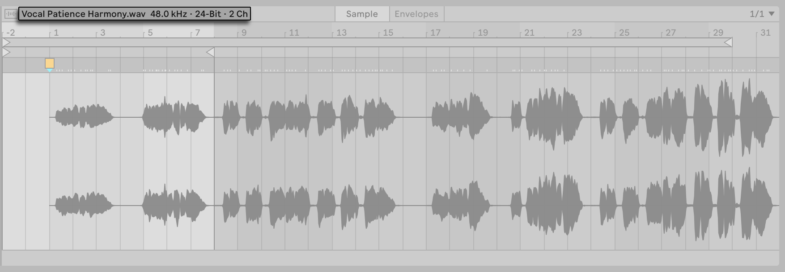
When multiple audio clips are selected, the sample properties for all samples will be displayed. If a value is not the same for all samples, an asterisk is displayed instead. You will also see the total number of samples selected.
Clicking on the sample’s name from Clip View will open the sample file in the browser. You can also use the Show in Browser command in the Sample Editor’s context menu to reveal the file in the browser.
8.11 Cropping Clips
You can crop clips to keep only the parts you want, removing any unnecessary content. For example, you might want to use only a short portion of a longer sample in an audio clip, or might want to remove some of the MIDI notes that you captured.
When working with unlooped audio clips, you can use the start and end marker to set a region for cropping. You can then use the Crop Clip Sample command in the Sample Editor’s context menu to create a new, shorter sample whose length is limited to the region between the start and end marker. In looped clips, the beginning of the cropping region is set by either the start marker or loop start marker — whichever comes first — and the end of the region is set by the loop end marker.
You can also crop the sample to the current time selection with the Crop Clip Sample to Time Selection command, which appears in the context menu whenever you make a time selection in the clip.
Similarly to the Reverse function, cropping the sample creates a new sample by saving a portion of the longer sample. The new sample can be found, after saving the Live Set, in the Set’s Project folder, under Samples/Processed/Crop. Until the Set is saved, the new sample remains at the location specified by the Temporary Folder.
Both the Crop Clip Sample and Crop Clip Sample to Time Selection command can be triggered with the CtrlShiftJ (Win) / CmdShiftJ (Mac) keyboard shortcut.
Cropping MIDI clips works in the same way as cropping audio clips, except the names of commands are slightly different: Crop Clip is used when cropping to the region between start and end marker (in unlooped clips) or the start/loop start marker and loop end marker (in looped clips), while cropping to time selection is triggered by the Crop Clip to Time Selection command.
8.12 Replacing and Editing the Sample
To replace the sample referenced by the clip with a different one, drop the new sample directly from the browser into the Clip View. Alternatively, you can select a sample in the browser and double-click on it or press Enter to load the sample on the currently selected clip.
When you replace the sample, clip settings like pitch and volume will be retained. The Warp Markers will be retained only if the new sample has the exact same length as the old sample.
You can search for samples similar to the currently loaded sample by selecting the Show Similar Files command from the Sample Editor’s context menu.
The Sample Editor’s context menu also includes the Manage Sample File command. This opens the File Manager for the current Set with the sample referenced by the clip selected. From there, you can replace and destructively edit the sample, in such a way that all clips and instruments referencing the sample will be affected.
8.13 Editing Clip Properties for Multiple Clips
You can edit the Clip View properties of multiple clips at the same time. To create a multi-clip selection, click and drag from an empty clip slot to highlight the clips, or select one clip and use the Ctrl (Win) / Cmd (Mac) or Shift modifiers to add to your selection. The properties available in the Clip View for a multi-clip selection depend on the contents of the clips; generally only properties which the clips have in common are shown.
Controls such as sliders and knobs behave slightly differently when multiple clips are selected. If the clips in the selection have differing values for any particular parameter (clip transposition, for example), the range of these values will be displayed and can be adjusted with the control. Dragging the knob or slider to its absolute maximum or minimum value will make the clips’ settings thereafter identical, adjustable as a single value.
8.14 Clip Defaults and Update Rate
You can change the rate at which Live applies your Clip View settings to a running clip. Clip View changes will be quantized by the rate selected from the Clip Update Rate chooser in the Record, Warp & Launch Settings. Certain clip settings, such as Launch Mode and Warp Mode, can be set up as defaults for all new clips. This is also done in the Record, Warp & Launch Settings.
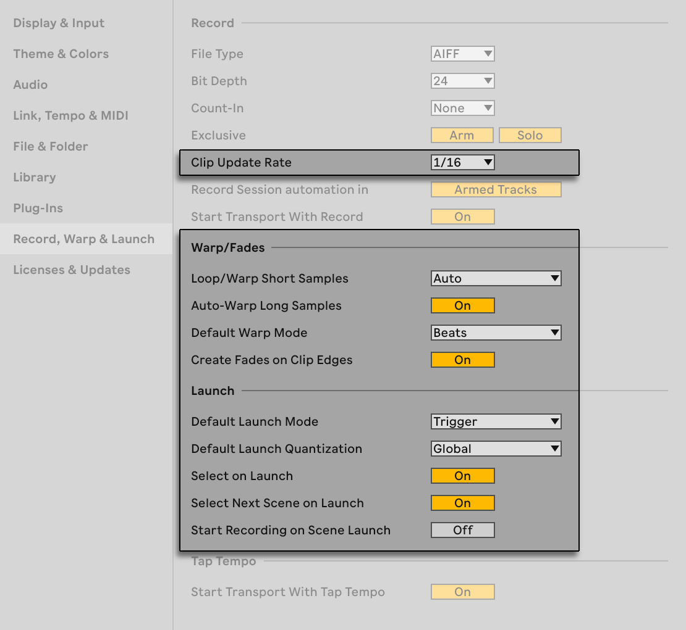